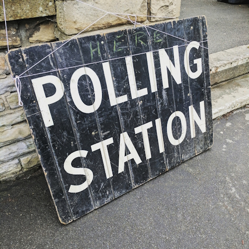
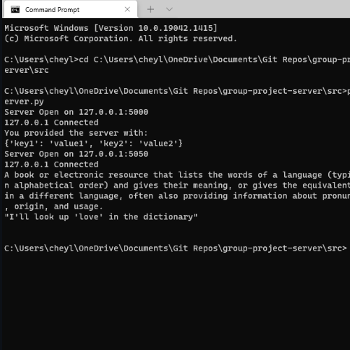
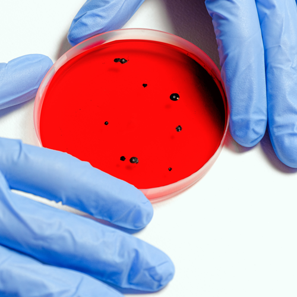
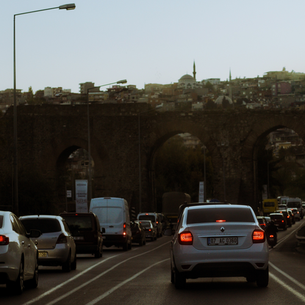
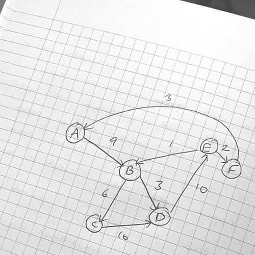
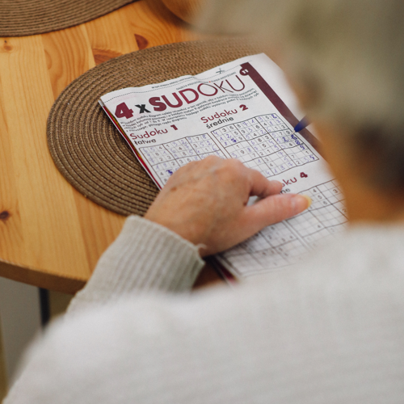

Hi, I'm Cheylea!
Data professional, creative tinkerer and serial hobby collector.
Player Stats
(About Me)
⭐ Current Quest ⭐
Taking a fucking break!
Stats
8
Can open any jar when told I can't6
There's nothing wrong with the ol' dad dancing, right?12
God gave the poorliest bellies to the bravest of girls14
So many strings to my bow it looks like a harp12
Knows when to speak up, but not always when to stop10
Loves public speaking. Hates the hairdressersStats were compiled by my resident Dungeon Master (and life partner), James ❤️
Traits
- 👩🏻💻 Maths, Computer Science Coding and Data Skills
- 🧶 Hobby hopper - catch me singing, crafting, performing and coding!
- 🙊 Doesn't quit - I can't put a problem down once I start it.
Achievements
- 👩🏻🎓 Masters in Computer Science
- 🎓 Bachelors in Mathematics
- 👥 Member of British Computer Society
- 🏆 Developer of Ultimate Flaggle and Bee Garden
- 🧵 Die Hard Cross Stitcher
- 🎭 Ex-Secretary of SOS Presents & Am-Dram Performer
Flaws
🚫 Cares far too much about getting things right, over-commits and known to be snappy when interrupted.
Inventory
- 💻 Laptop
- 📖 Kindle
- 🎧 Sony MX4s
♡ Making things
♫ Learning things
☆ Enjoying life
- Workdry
- Southampton City Council
- Tando
- ClearLoans
- Onefeed
- University of Liverpool
(Masters Degree) - Royal Holloway (Bachelors Degree)
Work Experience at Workdry, present
I lead the development of our strategic reporting suite covering revenue, assets, customers and operational performance, while also acting as Scrum Master. My role spans the full analytics lifecycle, from working with senior Finance and operational stakeholders to define KPIs and reporting requirements, through to building Power BI semantic models and developing the analytics gold layer in Azure Synapse using PySpark. I also provide technical guidance across the wider data team, supporting engineers and analysts with data modelling, development, testing and debugging.
🐝 Bee Garden
🚩 Ultimate Flaggle
My Projects 📁
There are my coding projects! I work on various personal projects that interest me and help improve my code. Check out some of my completed ones below!







Want to get notified when I release a new blog post?
Sign up here!
For the first time in my whole life, I know what I wanna do! And for the first time, I’m gonna do...
📥 My Blog Posts
Want to get notified when I release new blog posts?
Sign up
here!
2026
For the first time in my whole life, I know what I wanna do! And for the first time, I’m gonna do it! Author’s Note
2025
Last Friday was World Mental Health Day - and I knew I wanted to write something for it, but time did get away from me a little. Nevertheless, I thought I wouldn’t let the opportunity pass by entir...
A very brief blog post to say welcome to the new design of my website! I got struck by inspiration a few months ago to completely redesign and adapt my CV website to combine some of my personal int...
Back in April I posted about reducing my phone addiction and trying to find ways to reset my brain and waste less time on my phone. This post is written four months down the line, and goes through ...
Have you ever felt like your phone is rotting your brain but you can’t stop?
It has been quite some time since I graduated, and I’ve been ‘off and on’ working on something that I have been pursuing for pure fun.
2024
TLDR; My dissertation can be read here and the code is viewed here. You can also test my e-voting tool here, and if you’re a complete nerd the poster I did on e-voting as well here…
2021
Note from the author 2024: This is an archived blog from a newsletter I sent to family and friends about my studies, insanely thinking I could somehow keep it up weekly. So take with a pinch of sal...
Note from the author 2024: This is an archived blog from a newsletter I sent to family and friends about my studies, insanely thinking I could somehow keep it up weekly. So take with a pinch of sal...
Note from the author 2024: This is an archived blog from a newsletter I sent to family and friends about my studies, insanely thinking I could somehow keep it up weekly. So take with a pinch of sal...
Note from the author 2024: This is an archived blog from a newsletter I sent to family and friends about my studies, insanely thinking I could somehow keep it up weekly. So take with a pinch of sal...
Note from the author 2024: This is an archived blog from a newsletter I sent to family and friends about my studies, insanely thinking I could somehow keep it up weekly. So take with a pinch of sal...
Note from the author 2024: This is an archived blog from a newsletter I sent to family and friends about my studies, insanely thinking I could somehow keep it up weekly. So take with a pinch of sal...
Note from the author 2024: This is an archived blog from a newsletter I sent to family and friends about my studies, insanely thinking I could somehow keep it up weekly. So take with a pinch of sal...
Note from the author 2024: This is an archived blog from a newsletter I sent to family and friends about my studies, insanely thinking I could somehow keep it up weekly. So take with a pinch of sal...
A little collection of things I love ♡